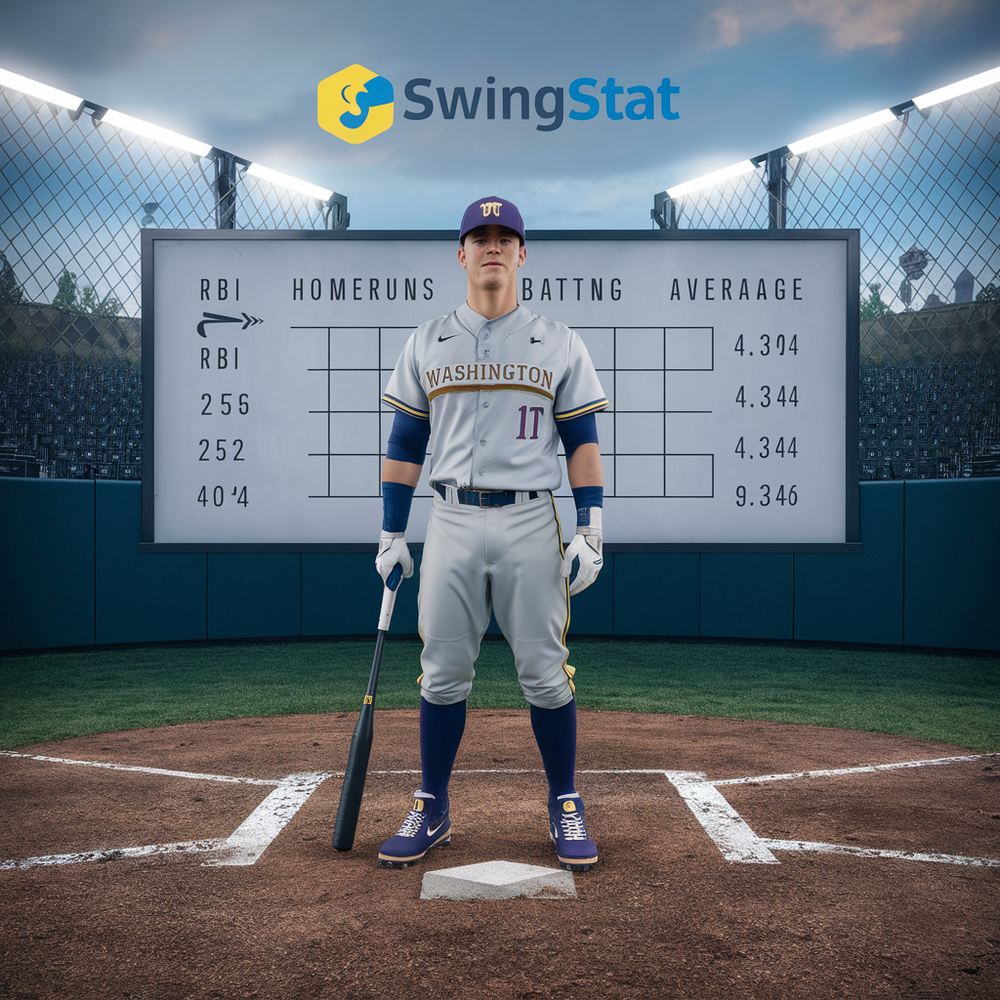

About Us
At SwingStat, we are dedicated to providing the University of Washington baseball team with cutting-edge sports analytics. Our tools and insights help players and coaches make data-driven decisions to enhance performance and strategy.
Stay tuned for more updates and insights from SwingStat. We're committed to helping the Huskies achieve their best on the field!
